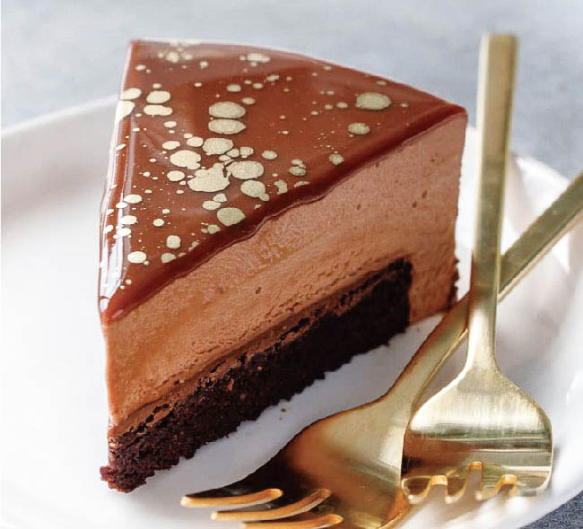

Dark Chocolate Dipped Cheesecake
Ingredients
1 Slice of NY Cheesecake, Dark Chocolate Curls(or nuts, candy pieces), Dark Chocolate Magic Shell, White Chocolate Ganache, Popsicle Sticks
Directions
Step 1: Freeze cheesecake about 2 hours or until firm.
Step 2: Line a tray with parchment paper and set to the side for dipped cheesecake.
Step 3: Fill a shallow bowl/tray with chocolate curls (or nuts/candy).
Step 4: Spear each cheesecake slice with Popsicle stick.
Step 5: Dip in Dark Chocolate Magic Shell coating.
Step 6: Set each dipped slice in the chocolate curls (or nuts/candy).
Step 7: Drizzle with white chocolate ganache.
Step 8: Place on parchment paper lined tray and return to freezer, until shell is hard.
Step 9: Place in refrigerating prior to serving, allowing the cheesecake to soften for eating.